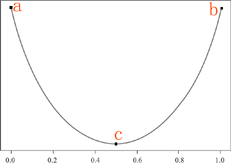
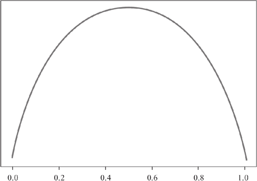

决策树算法：选择决策条件
首先来看一个“我想你来猜”的游戏，游戏规则很简单：一个人从脑海中构建一个事物，另外几个人最多可以向他提问 20 个问题，游戏规定，问题的答案只能用是或者否来回答。问问题的人通过回答者的“答案”来推分析、逐步缩小待猜测事物的范围，从而来判断他想的是什么。其实这个游戏与决策树工作过程相似。
那么你有没有考虑过要怎样选择“问什么问题”呢，在这里“问什么问题”就相当于决策树算法中的“判别条件”。选择什么判别条件，可以让我们又快又准确的实现分类，这是本节介绍的重点知识。
在每一次判别结束后，如果集合中归属于同一类别的样本越多，那么就说明这个集合的纯度就越高。比如，二元分类问题的数据集都会被分成两个子集，我们通过自己的纯度就可以判断分类效果的好与坏，子集的纯度越高，就说明分类效果越好。
上一节我们提到过，决策树算法是一类算法，并非某一种算法，其中最著名的决策树算法有三种，分别是 ID3、C4.5 和 CART。虽然他们都属于决策树算法，不过它们之间也存在着一些细微的差别，主要是体现在衡量“纯度”的方法上，它们分别采用了信息增益、增益率和基尼指数，这些算法的相关概念将在后续内容为大家说明。
要想明确纯度的衡量方法，首先我们要知道一些度量“纯度”的规则。下面我们将类别分为“正类与负类”，如下所示：
决策树算法中使用了大量的二叉树进行判别，在一次判别后，最理想的情况是分支节点下包含的类完全相同，也就是说不同的类别完全分开，但有时我们无法只用一个判别条件就让不同的类之间完全分开，因此选择合适判别条件区划分类是我们要重点掌握的。
首先某个类达到最大值，或者最小值时，纯度达到最高值，然后，当某一个类的占比达到 0.5 时，纯度将取得最低值。由这两个条件，我们可以做出 a/b/c 三个点，最后用一条平滑的曲线将这三个点连接起来。如下所示：
那么你有没有考虑过要怎样选择“问什么问题”呢，在这里“问什么问题”就相当于决策树算法中的“判别条件”。选择什么判别条件，可以让我们又快又准确的实现分类，这是本节介绍的重点知识。
纯度的概念
决策树算法引入了“纯度”的概念，“纯”指的是单一，而“度”则指的是“度量”。“纯度”是对单一类样本在子集内所占重的的度量。在每一次判别结束后，如果集合中归属于同一类别的样本越多，那么就说明这个集合的纯度就越高。比如，二元分类问题的数据集都会被分成两个子集，我们通过自己的纯度就可以判断分类效果的好与坏，子集的纯度越高，就说明分类效果越好。
上一节我们提到过，决策树算法是一类算法，并非某一种算法，其中最著名的决策树算法有三种，分别是 ID3、C4.5 和 CART。虽然他们都属于决策树算法，不过它们之间也存在着一些细微的差别，主要是体现在衡量“纯度”的方法上，它们分别采用了信息增益、增益率和基尼指数，这些算法的相关概念将在后续内容为大家说明。
纯度度量规则
那么我们应该采取什么样的方法去“衡量”某个集合中某一类别样本的纯度呢？当我们学习完机器学习之后，我们总不能还使用人工的方式去验证吧，那可真是徒劳无功了。要想明确纯度的衡量方法，首先我们要知道一些度量“纯度”的规则。下面我们将类别分为“正类与负类”，如下所示：
- 某个分支节点下所有样本都属于同一个类别，纯度达到最高值。
- 某个分支节点下样本所属的类别一半是正类一半是负类，此时，纯度取得最低值。
- 纯度代表一个类在子集中的占比多少，它并不在乎该类究竟是正类还是负类。比如，某个分支下不管是正类占比 60% 还是负类占比 60%，其纯度的度量值都是一样的。
决策树算法中使用了大量的二叉树进行判别，在一次判别后，最理想的情况是分支节点下包含的类完全相同，也就是说不同的类别完全分开，但有时我们无法只用一个判别条件就让不同的类之间完全分开，因此选择合适判别条件区划分类是我们要重点掌握的。
纯度度量方法
根据之前学习的机器学习算法，如果要求得子集内某一类别所占比最大或者最小，就需要使用求极值的方法。因此，接下来探讨使得纯度能够达到最大值和最小值的“纯度函数”。1) 纯度函数
现在我们做一个函数图像，横轴表示某个类的占比，纵轴表示纯度值，然后我们根据上面提出的“纯度度量规则”来绘制函数图像：首先某个类达到最大值，或者最小值时，纯度达到最高值，然后，当某一个类的占比达到 0.5 时，纯度将取得最低值。由这两个条件，我们可以做出 a/b/c 三个点，最后用一条平滑的曲线将这三个点连接起来。如下所示：

图1：纯度函数图像
如上图，我们做出了一条类似于抛物线的图像，你可以把它看做成“椭圆”的下半部分。当在 a 点时某一类的占比纯度最小，但是对于二元分类来说，一个类小，另一个类就会高，因此 a 点时的纯度也最高（与 b 恰好相反），当某类的纯度占比在 c 点时，对于二元分类来说，两个类占比相同，此时的纯度值最低，此时通过 c 点无法判断一个子集的所属类别。
图1：纯度函数图像
2) 纯度度量函数
前面在学习线性回归算法时，我们学习了损失函数，它的目的是用来计算损失值，从而调整参数值，使其预测值不断逼近于误差最小，而纯度度量函数的要求正好与纯度函数的要求相反，因为纯度值越低意味着损失值越高，反之则越低。所以纯度度量函数所作出来的图像与纯度函数正好相反。如下图所示：

图2：纯度度量函数
图2：纯度度量函数
上图就是纯度度量函数，它与纯度函数恰好相反。纯度度量函数图像适应于所有决策树算法，比如 ID3、C4.5、CART 等经典算法。
关注公众号「站长严长生」，在手机上阅读所有教程，随时随地都能学习。内含一款搜索神器，免费下载全网书籍和视频。

微信扫码关注公众号